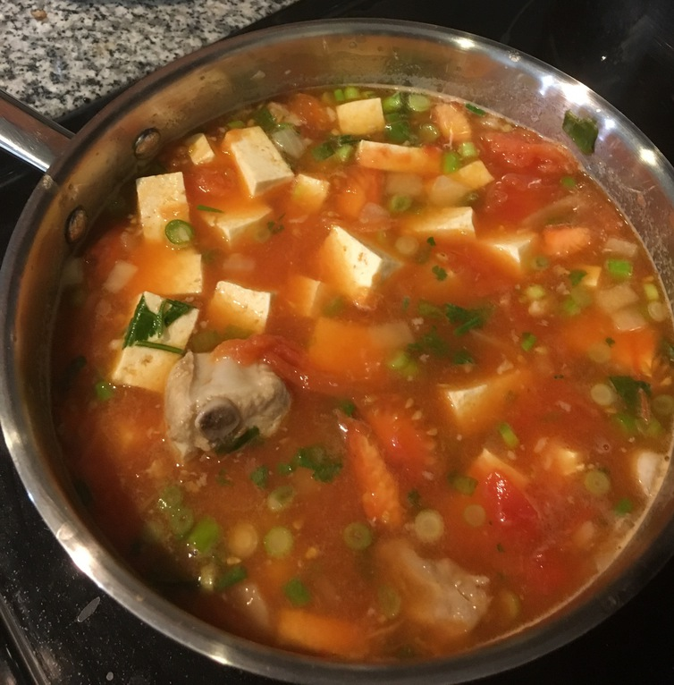

| Other | Meat | Veggie | Fruit |
|---|---|---|---|
| nuoc mam | fish tofu | cilantro | |
| wonton soup base | pork rib tips | green onions | |
| tofu | onion | ||
| tofu puffs | shallot | ||
| tomato |
| instructions |
|---|
| Heat yellow onion, shallots, and tomatoes in pot on medium heat |
| When tomatoes have softened, add 1 bowl of water |
| Add tofu (fried if desired), soy puffs, pork chops, or fish tofu |
| Add wonton soup base and nuoc mam, adjust to taste |
| Simmer for 15 minutes |
| Add cilantro, green onions, etc in last few minutes |